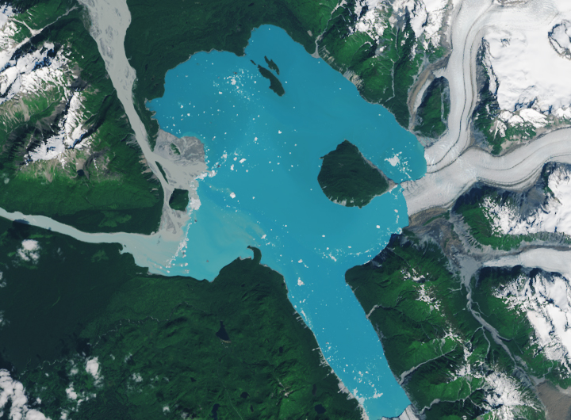

Alaska’s Brand New Island
Along the coastal plain of southeastern Alaska, water is rapidly replacing ice. Glaciers in this area are thinning and retreating, with meltwater forming proglacial lakes off their fronts. In one of these growing watery expanses, a new island has emerged.
The Alsek Glacier once encircled a small mountain known as Prow Knob near its terminus. In summer 2025, the glacier lost contact with Prow Knob, leaving the approximately 2-square-mile (5-square-kilometer) landmass surrounded by the water of Alsek Lake.
This pair of images shows the extent of ice retreat and lake growth between 1984 and 2025. They were acquired in the summers of those years with the TM (Thematic Mapper) on Landsat 5 and the OLI-2 (Operational Land Imager-2) on Landsat 9, respectively.
In the early 20th century, the Alsek Glacier terminated at Gateway Knob, about 3 miles (5 kilometers) west of Prow Knob, according to Mauri Pelto, a glaciologist at Nichols College, who first saw this glacier in 1984. By mid-century, the ice had retreated eastward but still encompassed Prow Knob. The late glaciologist Austin Post took aerial photographs of the Alsek’s terminus in August 1960 and would later tell Pelto that he named the feature (considered a nunatak at that point) for its resemblance to a ship’s prow.
A 2-by-2 grid of images shows Alsek Lake in 1984, 1999, 2018, and 2025. Glaciers that terminate at the lake along its eastern and southern sides recede over time, and a landmass in the eastern part of the lake that was partially encased by glacial ice in 1984 is an island in 2025. Lake water, which appears gray at the start of the series and bright blue at the end, fills the voids left by the retreating glaciers.
Part of Prow Knob’s perimeter had converted to lakeshore by 1984 (top-left, above). Note, however, that the Alsek Glacier remained connected with the northern arm of the Grand Plateau Glacier. That would change by 1999 (top-right, above) as both glaciers retreated. The Alsek’s northern tongue also detached from a narrow island, exposing the terminus to more calving, Pelto wrote.
After about two more decades of ice retreat, two tributaries to the north and south of the Alsek ceased feeding ice to the glacier (bottom-left, above). Alsek Lake had also grown significantly to the south, filling the void left by the Grand Plateau Glacier. Then, in 2025 (bottom-right, above), ice pulled away from Prow Knob, completing its transformation into an island. Based on satellite imagery, separation occurred sometime between July 13 and August 6.
Both arms of the Alsek Glacier have retreated more than 3 miles (5 kilometers) since 1984, according to Pelto, and that trend is likely to continue. Having lost contact with Prow Knob, the ice is less stable and more prone to calving. However, the ice did hold on to Prow Knob beyond 2020, the year that Pelto and Post previously estimated that separation would occur based on the rate of retreat from 1960 to 1990.
Since 1984, Alsek Lake has grown from 45 square kilometers to 75 square kilometers. Taken together with neighboring proglacial Harlequin and Grand Plateau lakes, the three have more than doubled in size in that period.